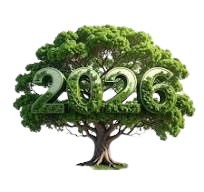

FUTURO SUSTENTÁVEL
O equilíbrio vital entre produção e meio ambiente
Arthur Xavier | n°: 09 | 3°DO Dilema do Crescimento
O desafio atual é produzir para uma população que caminha para 10 bilhões de habitantes.
- Consequência: Escassez de recursos e mudanças climáticas.
- A Pergunta: É possível crescer sem destruir?
Produção Sustentável
Não é parar de produzir, mas produzir de forma inteligente. Clique nos pilares:
Fazer mais com menos recursos para reduzir o desperdício.
O resíduo de um processo vira matéria-prima de outro.
Processos que devolvem saúde ao ecossistema.
Tecnologias do Amanhã
Energia: Solar, eólica e hidrogênio verde.
Agro: IA e drones para reduzir água.
Materiais: Biodegradáveis de fungos ou algas.
Gestão ESG e Triple Bottom Line
Foco no Social, Ambiental e Econômico.
"A sustentabilidade não é mais uma escolha ética, é uma necessidade estratégica."